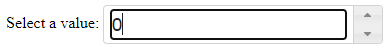

JQuery UI es una librería creada a partir de JQuery que provee efectos, temas, eventos y componentes (widgets) adicionales para mejorar el aspecto y funcionalidad de páginas web.
Al igual que en el caso de JQuery, JQuery UI puede instalarse de dos modos:
Puede descargarse la librería como un fichero comprimido ZIP para descargarla y descomprimirla en nuestro sitio web de modo que podamos referenciarla localmente:
También es posible referenciar la librería desde una dirección
externa empleando los enlaces del propio sitio web de JQuery a las
diferentes versiones de la librería JQueryUI.
En la página pueden encontrarse los enlaces a la última versión de la librería comprimida (minified) y sin comprimir (uncompressed). Al pulsar sobre los enlaces se muestra el código que debemos añadir en nuestras páginas para integrar la librería.
La librería JQueryUI requiere de un tema para
funcionar. Los temas son hojas de estilo (.css) que definen las
formas, colores y estilos empleados por los componentes definidos en
la librería JQueryUI.
Existen conjuntos de estilos ya prediseñados que pueden descargarse o referenciarse desde la propia página de JQueryUI. Es preciso asegurarse de emplear un estilo correspondiente a la versión de la librería que vayamos a utilizar:
Los estilos que conforman los temas pueden consultarse en la web:
Además de los temas predefinidos también es posible crear estilos personalizados mediante la herramienta de generación (ThemeRoller).
http://jqueryui.com/themeroller/
Esta web es una herramienta que permite configurar visualmente un temas de JQuery para que los componentes se vean de manera acorde al estilo de nuestra web:
Una completada la personalización es posible descargar el tema como un hoja de estilos CSS.
Ejemplo: La siguiente página web muestra un componente Spinner.

En los siguientes códigos de ejemplo, las librerías JQuery, JQueryUI y el tema están referenciadas remotamente desde la web de JQuery, por lo que no es necesario su descarga local para probar los códigos:
<!DOCTYPE html> <html> <head> <meta charset="utf-8" /> <title></title> <!-- Libreria JQuery comprimida --> <script src="https://code.jquery.com/jquery-3.6.0.min.js"></script> <!-- Tema 'base' para JQueryUI --> <link href="https://code.jquery.com/ui/1.13.1/themes/smoothness/jquery-ui.css" rel="stylesheet" /> <!-- Libreria JQueryUI comprimida --> <script src="https://code.jquery.com/ui/1.13.1/jquery-ui.min.js"></script> <script> $(function () { var widget_spinner = $("#spinner").spinner(); }); </script> </head> <body> <p> <label for="spinner">Select a value:</label> <input id="spinner" name="value"> </p> </body> </html> |